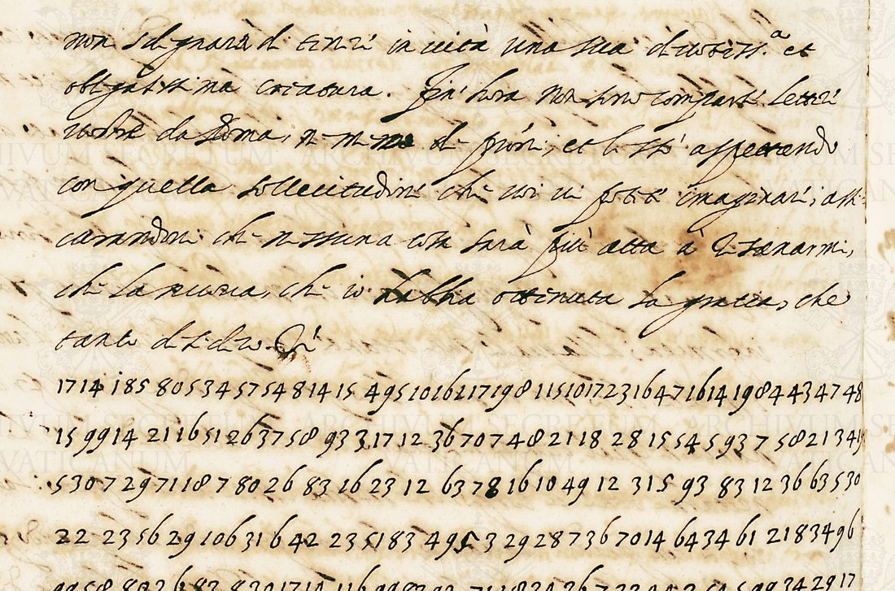

At a glanceExisting decipherment · both enclosures read (R53, R54)
- The letters
- Two cipher enclosures of Gian Francesco Morosini, cardinal legate in France, to Rome: R53 from Moulins, early May 1589 (its clear covering letter is f. 499r, docketed “4 di maggio”; it had been placed at Tours), R54 dated in clear at Moulins, 11 May 1589. R53’s last clause runs on into R54.
- Where
- Archivio Apostolico Vaticano, Segreteria di Stato, Francia 22, items 22/32 and 22/33 (images 499v and 502r). DECODE R53 and R54, “partially decrypted”; part of catalogue item 243.
- The cipher
- Syllables and letters in groups of one or two figures, written without separators, several forms for common syllables, no nulls; three-figure names and words marked with a dot on the first figure.
- How it was deciphered
- George Lasry reconstructed about seventy elements of the key in 2020. With his values alone the decode gave only fragments (decoded, not read, 22 October 2026). On 23 October 2026 the decipherment made in 1589, on ff. 500r–500v, was found among DECODE R54’s attachments filed as “cleartext” and never opened. It was transcribed and aligned element by element with the figures under Lasry’s key, which confirmed one new value (4 = c, at all 17 places).
- What it says
- Navarre has come to Tours, lodged at Plessis, and waited on Henri III, giving him his shirt at his rising and his napkin at table; the King had him dine with him, “a mixing at court of heretics and Catholics”. Navarre’s troops are to be turned against Mayenne. In R54 the legate expects the Pope to recall him.
- Still open
- 29 single elements whose value only the decipherment gives (one place each, not adopted as key values), and a few words where the figures as transcribed give no word and the decipherment carries the reading.
Until 14 October 2026 these two enclosures shared a page with Morosini’s other thirty-four cipher sheets of Francia 22, which use Meister’s key no. 40: a different key, with its own page.

01 The documents and the key
- R53, Francia 22/32, image 499v. A short clear passage (the legate is waiting “con quella sollecitudine” for letters from Rome granting his leave) and 785 cipher figures, transcribed for DECODE by the volunteer Midas on 31 March 2017. It was placed at Tours from the series; the clear letter it went with (f. 499r, docket f. 498v “4 di maggio”) puts it at Moulins in early May 1589.
- R54, Francia 22/33, image 502r. 663 cipher figures (DECODE transcription by NiLan, 6 April 2017) and the clear dating line Di Molins à gli xi di Maggio 1589.
DECODE files a key for these two records under the name “ASV – F22b”: George Lasry’s reconstruction of 24 October 2020. He notes that it is variable in length and not deterministic. Its elements are one or two figures for syllables and letters (a 3 or 7, ba 86, ca 73, di 93, e 5 or 8, la 60, re 43, si 83, 85, 89 or 95, u 21 or 54), and three figures for a few syllables and words (102 mpo, 116 or 216 me, 495 or 498 chi, 496 che). Names carry a dot on the first figure: 1̇24 Umena (Mayenne), 1̇85 Navarro. There are no nulls. The other enclosures of Morosini’s legation use a different system, Meister’s key no. 40, with the dot on the middle figure and nulls.
02 R53: Moulins, early May 1589
The 1589 decipherment on f. 500r, aligned with the figures, gives the whole cipher. Of its 693 letters, 603 are the figures’ own value under Lasry’s key; the rest are the decipherer’s doubled consonants and words where the figures slip or a code has no value. Where the figures give another word than the decipherer wrote (six words), the figures are followed. The reading begins:
Il Navarro, per quello che mi disse domenica il secretario del Vicelegato di Avignone, arrivò giovedì à Tours, et alloggiò à Plesi con grosa compagnie di signori et gentil’huomini francesi, che alloggiano nel Borgo verso detto Plesi; et il medesimo giorno andò à vederlo il Re; al quale la matina seguente esso Navarro diede la camisa al letto, et la salvietta alla tavola; ma Sua Maestà la fece desinare seco. Onde si è fatta una mescolanza alla Corte di heretici et di Catholici, che è odiosa à tutti li huomini dabene.
(Navarre, from what the secretary of the Vice-legate of Avignon told me on Sunday, arrived at Tours on Thursday and lodged at Plessis …; the same day the King went to see him, and the next morning Navarre himself handed him his shirt at his rising and his napkin at table; but His Majesty had him dine with him. So a mixing of heretics and Catholics has come about at court, hateful to all good men.) Until the decipherment was found, the decode had made the vice-legate the visitor. The letter goes on: Navarre is to pass his troops in review before the King and, once more of the Vicomte de Turenne’s have joined, to send them against Mayenne (Umena), who is between Le Mans and Vendôme.
03 R54: Moulins, 11 May 1589
R54 continues R53’s last clause (the decipherment runs on from f. 500r to f. 500v). With Navarre beside the King, the legate expects the Pope to recall him, and asks that anyone at court who wants him back be told it is impossible “se non pensano di mandarmi un grosso essercito che mi accompagni et difenda dagli heretici”. Of 622 letters, 468 are the figures’ own value and 61 stand on digits that DECODE’s transcription marks illegible, supplied by the decipherment; one non is the decipherer’s insertion in the margin, with no figures under it.
04 Method
The figures run on without separators, so the key cannot be applied group by group. The decoder of the sibling entry (targets/morosini1588/decrypt.py, run with --f22b) tries every way of dividing the figures into Lasry’s one-, two- and three-figure elements and keeps the division that a five-gram model of sixteenth-century Italian scores best. Where the key has a gap, the model fills it with the nearest Italian it can make from the elements it knows, so a stretch that looks like Italian is not proof that the values are right. The figures follow DECODE’s volunteer transcriptions; the scans were not checked figure by figure.
The decipherment of 1589 (23 October 2026). DECODE R54 carries, as png attachments filed “[cleartext]”, the decipherment written in 1589 for both cipher passages, on f. 500r (R53) and f. 500v (R54). It was transcribed (texts/R53_decifrato_f500r.txt, R54_decifrato_f500v.txt) and aligned element by element with the figures under Lasry’s key (research/reading_audit/b21_moro_align.py, texts/*_align.tsv). The alignment confirmed one value, 4 = c, at all 17 places, and no letter rests on a look-alike sign. The readings, texts/R53_reading.md and R54_reading.md, with English beside them, follow the figures where they give another word than the decipherer wrote.
05 What remains uncertain
- 29 single elements whose value only the decipherment gives (57 q, 117, 637, 42, 53/0, 81, 38, 27 lu, 75, 11 and others;
texts/f22b_values_b21.tsv). Each occurs once in 1,448 figures, so they are not adopted as key values; the reading rests on the decipherment there. - Words where the figures as transcribed give no Italian word (in R53 mi disse domenica, francesi, seco, al quale si tiene; in R54 di qui, fin hora, perche, distrutti i primi): lone figures or digits DECODE marks illegible, carried by the decipherment.
- Before the decipherment was found, a decode with Lasry’s values gave 75% of letters in Italian word forms but no sentences, and rebuilding the missing values from the cipher alone (14 October 2026) gave fits on R53 and R54 that agreed on one code in ten; none was adopted. Meister (1906) prints no second key for Morosini.
Full texts
The transcription and the decryption of every document on this page, so that the reading can be used and checked. Short files are shown here; all are in the repository.
R53, Francia 22/32, image 499v, [Tours, spring 1589] decoded, not read
Morosini's clear covering passage says he waits anxiously for letters from Rome granting his leave. The cipher reports that the vice-legate of Avignon has arrived at Tours and lodged near Plessis, that 'si e fata una mescolanza ala corte di heretici et di catolici', and something of Mayenne ('Umena') near Le Mans.
A mechanical decode with holes in most sentences: shown so that the transcription and the key can be checked and improved, not as a reading.
Transcription
#CATALOG NAME: Segr. Stato Francia 22/32 #IMAGE NAME: 499v.jpg #TRANSCRIBER NAME: Midas #DATE OF TRANSCRIPTION: March 31, 2017 #TRANSCRIPTION TIME: 47 mins. #IMAGE NAME: 499v.jpg <CLEARTEXT IT non solo? grarà? di tinze? in uita una sua ???.a et obligatissima criatura?. Fra' hora non sono? comparse? lettere uorbire? da Roma, N M ?? di proni?, et li? ??' aspettendo con quella sollecitudine che usi ui? postite? imaginari, alli carandoni? che nessuna cosa sarà più atta? a Isanarmi?, che la nuoua?, che io habbia ottenuta la gratia, che tanto ?????> 1 7 1 4 1 8 5 8 0 5 3 4 5 7 5 4 8 1 4 1 5 4 9 5 1 0 1 6 1 1 7 1 9 8? 1 1 5 1 0 1 7 2 3 1 6 4 7 1 6 1 4 1 9 8 4 4 3 4 7 4 8 1 5 9 9 1 4 2 1 1 6 5 1 2 6 3 7 5 8 9 3 3 1 7 1 2 3 6 7 0 7 4 8 2 1 1 8 2 8 1 5 5 4 5 9 3 7 5 8 2 1 3 4 1 9 5 3 0 7 2 9 7 1 1 8 7 8 0 2 6 8 3 1 6 2 3 1 2 6 3 7 8 1 6 1 0 4 9 1 2 3 1 5 9 3 8 3 1 2 3 6 6 3 5 3 0 2 2 2 3 5 6 2 9 1 0 6 3 1 6 4 2 2 3 5 1 8 3 4 9 5 3 2 9 2 8 7 3 6 7 0 1 4 6 4 3 4 6 1 2 1 8 3 4 9 6 9 9 5 8? 8 0 2 6 8 3 8 3 0 1 7 1 4 1 1 6 9 9 8 3 9 2 7 1 1 8 3 4 3 6 7 2 3 4 4 3 5 4 5 9 9 3 4 2 9 1 7 1 4 2 1 6 7 1 4 3 2 2 6 6 0 1 3 0 5 6 7 4 8 9 1 2 5 4 8 2 3 5 0 8 9 6 1 8 5 9 3 5 9 9 6 0 7 3 1 0 6 8 3 7 7 1 4 2 6 5 8 5 3 0 6 0 1 9 7 1 4 5 4 1 7 8 4 7 3 6 0 4 7 5 4 1 5 6 0 5 3 0 1 9 2 1 7 1 3 0 1 7 8 1 9 4 7 6 0 9 7 5 1 9 9 8 3 7 4 4 3 8 9 5 1 1 8 2 3 9 9 8 3 8 7 9 4 7 2 1 7 4 1 1 6 1 9 1 6 6 0 2 3 8 2 7 6 0 1 6 3 4 5 0 9 3 9 8 4 3 5 6 4 0 5 3 0 9 3 7 3 5 8 2 5 4 0 4 9 8 5 1 5 9 1 1 8 7 8 7 6 5 5 6 2 5 9 2 1 1 8 1 0 6 3 1 7 6 2 8 7 0 4 9 8 5 9 6 1? 8 5 4 4 5 4 8 2 1 7 7 8 8 6 5 8 7 9 3 4 4 9 7 8 4 3 6 5 5 0 2 6 6 2 8 4 2 2 3 5 6 7 6 0 5 4 1 7 1 9 4 7 9 3 6 2 3 1 3 0 1 7 8 1 9 4 7 6 0 3 2 2 6 2 8 2 1 2 3 5 0 4 9 8 7 0 6 7 8 9 6 3 7 1 4 2 0 3 1 3 1 4 3 0 3 4 5 9 9 1 4 5 4 1 7 1 9 1 6 2 3 5 0 9 3 6 5 4 3 7 4 9 3 8? 9 1 2 7 4 5 4 3 9 3 1 9 3 3 2 3 2 2 3 4 2 6 1 6 2 3 3 0 4 1 1^. 2 4 4 9 8 8 3 3 0 6 3 5 4 7 2 1 3 1 9 4 1 2 6 1 3 0 2 3 1 9 5 3 0 2 1 7 2 3 4 4 9 2 3 6 2 3 8 3 7 8 5 2 2 3 4 4 4 9 6 9 3 1? 0 1 2 3 1 9 3 7 9 4 3 4 9 5 2 6 6 7 3 4 8 5 9 9 1 4 1^. 1 6 5 4 1 3 6 1 3 0 2 8 1 8? 4 8 9 3 3 5 2 6 9 3 8 9 6 1^. 2 4 8? 9 8? 1 7 0
Decryption
# R53 decryption, copied verbatim from decode_updates/decryptions/R53.txt (22 Oct 2026); word-split by ../morosini1588/make_decryptions.py from decrypt_raw.txt (Lasry's F22b key, D3187/D3188), no letters changed; this is the split measured by measure_sense.py [IMG 499v] ilo e pere a uelo ch im co[?]i se[?] o min cota colse dorario de luco celegato di niagnone a riuo giouedia tours et a logio a ple si con grosa compagnie di signoro et gentilomini boge ae orsi a logia non el borgo uerso de to ple si et il medesimo giorno ando a uederlo il ui al quale la matina si guente eh io e die de la cami sia alleto et la salui et a a la tauola et sua maiesta la fece desinare si c e onde si e fata una mescolanza a la corte di heretici et dicatolici chi eodos aat utili huomini da gine chiehi o e doueua sabato far pasare tute le sue[?] geati ala uista di sua maiesta la quale giunte chineia siia alcuni altre del uisconte di iuan a di signaua di spinger le contra umena chi si trouaua s r alemans et uandomo non si sapendo che d im gni di fare chi le forsi del re erano ma giori di que le di sii umena ehe i[?]
Decryption
### R53 (Francia 22/32) clear heading: non solo? grarà? di tinze? in uita una sua ???.a et obligatissima criatura?. Fra' hora non sono? comparse? lettere uorbire? da Roma, N M ?? di proni?, et li? ??' aspettendo con quella sollecitudine che usi ui? postite? imaginari, alli carandoni? che nessuna cosa sarà più atta? a Isanarmi?, che la nuoua?, che io habbia ottenuta la gratia, che tanto ????? iloepereauelochimco?ise?omincotacolsedorariodelucocelegatodiniagnoneariuogiouediatoursetalogioaplesicongrosacompagniedisignoroetgentilominibogeaeorsialogianonelborgouersodetoplesietilmedesimogiornoandoauederloiluialqualelamatinasiguenteehioediedelacamisiaalletoetlasaluietaalatauolaetsuamaiestalafecedesinaresiceondesiefataunamescolanzaalacortedihereticietdicatolicichieodosaatutilihuominidaginechiehioedoueuasabatofarpasaretutelesue?geatialauistadisuamaiestalaqualegiuntechineiasiiaalcunialtredeluiscontediiuanadisignauadispingerlecontra[UMENA]chisitrouauasralemansetuandomononsisapendochedimgnidifarechileforsidel[RE]eranomagioridiqueledisii[UMENA]ehei? ### R54 (Francia 22/33) clear heading: chi è quara mouari dirui Conchi fine mi ?? ?allomand. Di Molins à gli xi di Maggio 1589 / SIGNATURE / SIGNATURE hgliandauanoingrosandoognigi?aregoparedonqueilocolreetuiscolatiglihereticicoicaelicialacortepensochifaramagi?araichelureiloileuarmileaaequandosindranonlohabiafatoilpaehpermiadisgratiaifaetchiu?ihneisteanco?aacunodiqueininirichihauefenimochiiomeneerarealacortenonmancateeraipregodifargliconohrepaatratadelimmneeledisuapensanodimandarmiungiahtuhrciepamiacompagnietdifendadaglihretici?ltrechiaestaunii?taglialatestanobiquelochihabiamodiscorsoinaemealapartitauostradasuaepiuinmpoteredialcunodipraticareetcon??aderecoapauagliaehndodistaeti?lcogonainentiosi
R54, Francia 22/33, image 502r, Moulins, 11 May 1589 decoded, not read
Read in fragments only: the heretics growing stronger at court beside the Catholics ('mescolati gli heretici co i catolici ala corte'), the writer's own fears, and a request to make something known.
A mechanical decode with holes in most sentences: shown so that the transcription and the key can be checked and improved, not as a reading.
Transcription
#CIPHERTEXT #CATALOG NAME: Segr. Stato Francia 22/33 #IMAGE NAME: 502r.jpg #TRANSCRIBER NAME: NiLan #DATE OF TRANSCRIPTION: April 6, 2017 #TRANSCRIPTION TIME: 60 mins. #IMAGE NAME: 502r.jpg ? 9 1 2 2 5 7 2 3 7 6 2 1 3 3 6 1 7 2 3 1 2 6 3 7 8 2 3 4 4 1 5 1 2 3 1 2 8 1 ? 3 4 3 6 1 4 ? ? 9 4 3 4 4 2 3 3 5 1 7 1 4 1_. ? 5 1 6 1 4 4 3 5 3 0 2 1 6 1 9 1 6 6 0 5 6 1 2 2 5 9 8 4 3 5 6 4 0 1 6 1 7 7 3 5 ? 2 5 4 0 7 6 0 1 6 3 4 5 0 5 2 2 3 9 6 4 9 5 7 9 41 1 3 0 7 1 1 ? 3 4 1_. ? 6 4 ? 9 6 1 4 2 1 ? 4 3 1 7 1 4 1_. 5 1 7 2 6 2 1 7 3 4 1 0 6 2 6 7 3 8 3 2 2 3 4 4 9 5 2 3 9 1 ? 4 1 3 6 2 3 2 9 9 7 5 5 7 7 9 5 8 1 7 1 4 4 9 5 ? 9 5 2 3 4 1 0 6 3 9 3 1 9 1 2 4 1 5 6 7 6 7 ? 9 5 3 0 4 9 8 2 1 ? 0 1 7 ? 9 2 3 5 6 1 9 5 0 7 2 3 1 6 1 3 7 2 0 3 6 9 3 3 5 1 7 ? 3 1 2 3 6 4 8 4 9 8 9 7 2 1 5 ? 9 7 3 1 9 2 4 9 5 1 7 1 5 2 1 6 7 0 5 ? 3 4 7 4 ? 3 7 6 0 1 6 3 4 5 0 3 6 2 3 1 3 0 2 3 7 3 5 0 5 4 1 6 8 0 4 3 6 1 9 3 7 9 3 4 1 2 2 5 1 6 3 6 ? 9 4 3 4 9 ? ? 3 3 0 4 1 4 7 9 9 1 4 1 7 1 0 1 0 2 ? 3 5 5 2 6 ? 9 3 6 2 3 5 2 2 3 7 8 3 6 9 3 1 3 0 2 3 7 6 3 4 1 0 6 2 1 2 3 1 2 6 3 9 6 5 ? 9 3 4 4 0 5 ? 4 9 ? 1 0 6 7 1 6 1 0 4 9 1 2 3 1 5 3 0 9 3 9 7 2 3 7 6 7 6 1 2 2 5 9 ? 4 3 5 6 4 0 1 ? 1 4 3 0 4 3 4 9 8 3 5 1 9 4 7 2 1 3 1 1 ? 7 0 4 7 1 2 2 5 7 6 0 5 0 1 9 4 7 3 6 5 5 ? 3 5 2 9 4 9 8 9 7 5 5 3 9 2 9 3 1 9 1 6 3 4 9 6 1 7 2 3 ? 3 8 2 1 6 3 6 0 4 9 3 4 5 6 4 7 2 1 1 8 1 9 3 0 4 1 9 1 3 6 2 3 8 3 3 2 1 1 7 2 3 1 0 2 5 0 4 3 9 3 7 1 4 2 0 3 6 9 3 8 0 4 1 5 6 7 3 4 3 5 3 0 1 6 2 3 4 2 7 9 9 4 3 1 6 7 ? 4 9 ? 2 1 7 1 2 2 5 7 5 ? 9 2 3 4 4 9 3 1 9 3 0 7 5 5 6 1 1 ? ? 4 ? 1 ? 6 6 1 2 3 7 6 7 0 2 3 5 6 <CLEARTEXT IT chi è quara mouari dirui Conchi fine mi ?? ?allomand. Di Molins à gli xi di Maggio 1589> <CLEARTEXT IT SIGNATURE> <CLEARTEXT IT SIGNATURE>
Decryption
# R54 decryption, copied verbatim from decode_updates/decryptions/R54.txt (22 Oct 2026); word-split by ../morosini1588/make_decryptions.py from decrypt_raw.txt (Lasry's F22b key, D3187/D3188), no letters changed; this is the split measured by measure_sense.py [IMG 502r] hgli andauano in grosando ogni gi[?]a rego pare don queilo col re et ui scolati gli heretici coi caelici a la corte penso chifara ma gi[?]a rai che lure il oi leuarmi leaae quandosi ndra non lo habia fato il paeh per mia disgrati ai fa et chiu[?] ihn eiste anco [?]a a cuno di que inini richi hauefen imo chi io mene era reala corte non mancate era i prego di fargli cono h repa a trata del im m nee le di sua pensano di mandarmi un gia h tu h rci e pamia compagniet difenda dagli h retici [?]ltre chia esta uni i[?]taglia la testa nobi que lochi habiamo discorso ina e me a la partita uostrada sua e piu in m potere di alcuno di praticare et con[?][?]adere co a paua gli ae hndo dista et i[?]l cogo nainentio si
Decryption
### R53 (Francia 22/32) clear heading: non solo? grarà? di tinze? in uita una sua ???.a et obligatissima criatura?. Fra' hora non sono? comparse? lettere uorbire? da Roma, N M ?? di proni?, et li? ??' aspettendo con quella sollecitudine che usi ui? postite? imaginari, alli carandoni? che nessuna cosa sarà più atta? a Isanarmi?, che la nuoua?, che io habbia ottenuta la gratia, che tanto ????? iloepereauelochimco?ise?omincotacolsedorariodelucocelegatodiniagnoneariuogiouediatoursetalogioaplesicongrosacompagniedisignoroetgentilominibogeaeorsialogianonelborgouersodetoplesietilmedesimogiornoandoauederloiluialqualelamatinasiguenteehioediedelacamisiaalletoetlasaluietaalatauolaetsuamaiestalafecedesinaresiceondesiefataunamescolanzaalacortedihereticietdicatolicichieodosaatutilihuominidaginechiehioedoueuasabatofarpasaretutelesue?geatialauistadisuamaiestalaqualegiuntechineiasiiaalcunialtredeluiscontediiuanadisignauadispingerlecontra[UMENA]chisitrouauasralemansetuandomononsisapendochedimgnidifarechileforsidel[RE]eranomagioridiqueledisii[UMENA]ehei? ### R54 (Francia 22/33) clear heading: chi è quara mouari dirui Conchi fine mi ?? ?allomand. Di Molins à gli xi di Maggio 1589 / SIGNATURE / SIGNATURE hgliandauanoingrosandoognigi?aregoparedonqueilocolreetuiscolatiglihereticicoicaelicialacortepensochifaramagi?araichelureiloileuarmileaaequandosindranonlohabiafatoilpaehpermiadisgratiaifaetchiu?ihneisteanco?aacunodiqueininirichihauefenimochiiomeneerarealacortenonmancateeraipregodifargliconohrepaatratadelimmneeledisuapensanodimandarmiungiahtuhrciepamiacompagnietdifendadaglihretici?ltrechiaestaunii?taglialatestanobiquelochihabiamodiscorsoinaemealapartitauostradasuaepiuinmpoteredialcunodipraticareetcon??aderecoapauagliaehndodistaeti?lcogonainentiosi
06 Sources
- Archivio Apostolico Vaticano, Segreteria di Stato, Francia 22, items 22/32–33: DECODE R53 and R54 (images on login), with the volunteer transcriptions D1717 and D1825.
- G. Lasry, reconstructed key “ASV – F22b”, DECODE R53 D3187 and R54 D3188 (24 October 2020).
- The sibling entry for the other thirty-four enclosures, in Meister’s key no. 40: Cardinal Morosini to Rome, 1587–89.
Transcriptions, Lasry’s key files and the decoded text: targets/morosini1589/. Page images are not reproduced beyond the crop above.